제강기능사 (2013-01-27 기출문제)
1과목: 임의 구분
1. 다음 진정강(Killed steel)이란?
- 탄소(C)가 없는 강
- 완전 탈산한 강
- 캡을 씌워 만든 강
- 탈산제를 첨가하지 않은 강
(정답률: 93%)

2. 처음에 주어진 특정한 모양의 것을 인장하거나 소성 변형한 것이 가열에 의하여 원래의 상태로 돌아가는 현상은?
- 석출경화효과
- 시효현상효과
- 형상기억효과
- 자기변태효과
(정답률: 96%)
3. Fe-C 평형상태도에서 δ(고용체) + L(융체) ⇄ γ(고용체)로 되는 반응은?
- 공정점
- 포정점
- 공석점
- 편정점
(정답률: 81%)
4. 강대금(steel back)에 접착하여 바이메탈 베어링으로 사용하는 구리(Cu)-납(Pb)계 베어링합금은?
- 켈멧(kelmet)
- 백동(cupronickel)
- 베비트메탈(babbit metal)
- 화이트메탈(white metal)
(정답률: 79%)
5. 동(Cu)합금 중에서 가장 큰 강도와 경도를 나타내며 내식성, 도전성, 내피로성 등이 우수하여 베어링, 스프링, 전기접전 및 전극재료 등으로 사용되는 재료는?
- 인(P) 청동
- 베릴륨(Be) 동
- 니켈(Ni) 청동
- 규소(Si) 동
(정답률: 86%)
6. 라우탈(Lautal) 합금의 특징으로 설명한 것 중 틀린 것은?
- 시효경화성이 있는 합금이다.
- 규소를 첨가하여 주조성을 개선한 합금이다.
- 주조 균열이 크므로 사형 주물에 적합하다.
- 구리를 첨가하여 피삭성을 좋게 한 합금이다.
(정답률: 82%)
7. 금속의 성질 중 전성(展性)에 대한 설명으로 옳은 것은?
- 광택이 촉진되는 성질
- 소재를 용해아혀 접합하는 성질
- 엷은 박(箔)으로 가공할 수 있는 성질
- 원소를 첨가하여 단단하게 하는 성질
(정답률: 77%)
8. Fe-C계 평형상태도에서 냉각시에 Acm선 이란?
- δ고용체에서 γ고용체가 석출하는 온도선
- γ고용체에서 시멘타이트가 석출하는 온도선
- α고용체에서 펄라이트가 석출하는 온도선
- γ고용체에서 α고용체가 석출하는 온도선
(정답률: 74%)
9. 오스테나이트계의 스테인리스강의 대표강인 18-8 스테인리스강의 합금 원소와 그 함유량이 옳은 것은?
- Ni(18%) - Mn(8%)
- Mn(18%) - Ni(8%)
- Ni(18%) - Cr(8%)
- Cr(18%) - Ni(8%)
(정답률: 64%)
10. Al-Si계 합금에 금속나트륨, 수산화나트륨, 플루오르화 알칼리, 알칼리염류 등을 첨가하면 조직이 미세화되고 공정점이 내려간다. 이러한 처리방법은?
- 시효 처리
- 개량 처리
- 실루민 처리
- 용체화 처리
(정답률: 55%)
11. 실용되고 있는 주철의 탄소 함유량(%)으로 가장 적합한 것은?
- 0.5~1.0%
- 1.0~1.5%
- 1.5~2.0%
- 3.2~3.8%
(정답률: 84%)
12. 열팽창계수가 아주 작아 줄자, 표준자 재료에 적합한 것은?
- 인바
- 센더스트
- 초경합금
- 바이탈륨
(정답률: 87%)
13. 황동에 납(Pb)을 첨가하여 절삭성을 좋게 한 황동으로 스크류, 시계용 기어 등의 정밀가공에 사용되는 합금은?
- 리드 브라스(lead brass)
- 문츠메탈(muntz metal)
- 틴 브라스(tin brass)
- 실루민(silumin)
(정답률: 66%)
14. 탄소강 중에 포함되어 있는 망간(Mn)의 영향이 아닌 것은?
- 고온에서 결정립 성장을 억제시킨다.
- 주조성을 좋게 하고 황(S)의 해를 감소시킨다.
- 강의 담금질 효과를 증대시켜 경화능을 크게 한다.
- 강의 연신율은 그다지 감소시키지 않으나 강도, 경도, 인성을 감소시킨다.
(정답률: 87%)
15. 특수강에서 함유량이 증가하면 자경성을 주는 원소로 가장 좋은 것은?
- Cr
- Mn
- Ni
- Si
(정답률: 63%)
16. 다음 그림에 나타난 치수 보조기호의 설명이 옳은 것은?
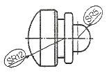
- 반지름
- 참고치수
- 구의 반지름
- 원호의 길이
(정답률: 82%)
17. 연삭의 가공방법 중 센터리스 연삭의 기호로 옳은 것은?
- GI
- GE
- GCL
- GCN
(정답률: 74%)
18. 강종 SNCM8에서 영문 각각이 옳게 표시된 것은?
- S-강, N-니켈, C-탄소, M-망간
- S-강, N-니켈, C-크롬, M-망간
- S-강, N-니켈, C-탄소, M-몰리브덴
- S-강, N-니켈, C-크롬, M-몰리브덴
(정답률: 65%)
19. 대상물의 구멍, 홈 등과 같이 한 부분의 모양을 도시하는 것으로 충분한 경우에 도시하는 방법은?
- 보조 투상도
- 회전 투상도
- 국부 투상도
- 부분 확대 투상도
(정답률: 78%)
20. 물체의 각 면과 바라보는 위치에서 시선을 평행하게 연결하면, 실제의 면과 같은 크기의 투상도를 보는 물체의 사이에 설치해 놓은 투상면을 얻게 되는 투상법은?
- 투시도법
- 정투상법
- 사투상법
- 등각투상법
(정답률: 65%)
2과목: 임의 구분
21. 15mm 드릴 구멍의 지시선을 도면에 바르게 나타낸 것은?
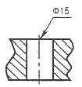
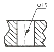
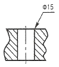
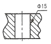
(정답률: 89%)
22. 투상도에서 화살표 방향을 정면도로 하였을 때 평면도는?
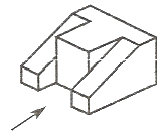
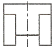
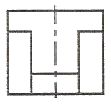
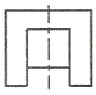
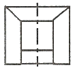
(정답률: 81%)
23. 미터 가는 나사로서 호칭지름 20mm, 피치 1mm인 나사의 표시로 옳은 것은?
- M 20 – 1
- M 20 × 1
- TM 20 × 1
- TM 20 - 1
(정답률: 87%)
24. 도면의 종류를 사용 목적 및 내용에 따라 분류할 때 사용 목적에 따라 분류한 것이 아닌 것은?
- 승인도
- 부품도
- 설명도
- 제작도
(정답률: 65%)
25. 다음 중 최대 죔새를 나타낸 것은?
- 구멍의 최소허용치수 + 축의 최대허용치수
- 구멍의 최소허용치수 + 축의 최소허용치수
- 축의 최소허용치수 - 구멍의 최대허용치수
- 축의 최대허용치수 - 구멍의 최소허용치수
(정답률: 50%)
26. 물체의 실제 길이 치수가 500mm인 경우 척도 1 : 5 도면에서 그려지는 길이는?
- 100mm
- 500mm
- 1000mm
- 2500mm
(정답률: 84%)
27. 용도에 따른 선의 종류와 선의 모양이 옳게 연결된 것은?
- 가상선 – 굵은 실선
- 숨은선 – 가는 실선
- 피치선 – 굵은 2점 쇄선
- 중심선 – 가는 1점 쇄선
(정답률: 75%)
28. Si가 0.71%의 용선 80톤과 고철을 전로에 장입하여 취련하면 몇 kg의 SiO2가 발생하는가? (단, 취련 종료시 용강 중 Si는 0.01%가 남아 있고 화학 반응식은 Si + O2 → SiO2를 이용하여, Si의 원자량은 28, O의 원자량은 16이다.)
- 1500kg
- 1200kg
- 560kg
- 140kg
(정답률: 65%)
29. 전기로 산화기 반응으로 제거되는 원소는?
- Ca
- Cr
- Cu
- Al
(정답률: 60%)
30. 전로의 반응속도 결정요인과 관련이 가장 적은 것은?
- 산소 사용량
- 산소 분출압
- 랜스 노즐의 직경
- 출강시 알루미늄 첨가량
(정답률: 69%)
31. 전기로의 밑부분에 용탕이 있는 부분의 명칭은?
- 로체
- 로상
- 천정
- 로벽
(정답률: 83%)
32. 전기로의 특징에 관한 설명으로 틀린 것은?
- 용강의 온도 조절이 쉽다.
- 사용원료의 제약이 적다.
- 합금철을 모두 직접 용강 속으로 넣을 수 있다.
- 로 안의 분위기는 환원 쪽으로만 사용할 수 있다.
(정답률: 81%)
33. 전로에서 주원료 장입시 용선보다 고철을 먼저 장입하는 안전상 이유로 가장 적합한 것은?
- 폭발방지
- 로구지금 탈락방지
- 용강유출 사고 방지
- 랜스 파손에 의한 충돌방지
(정답률: 89%)
34. 산소랜스(lance)를 통하여 산화칼슘을 노안에 장입하는 방법은?
- 칼도(Kaldo)법
- 로터(Rotor)법
- LD-AC법
- 오프 헬스(Open hearth)법
(정답률: 78%)
35. 산화광(Fe2O3, PbO, WO3)을 환원하여 금속을 얻고자 할 때 환원제로서 가장 거리가 먼 것은?
- 카본(C)
- 수소(H2)
- 일산화탄소(CO)
- 질소(N2)
(정답률: 77%)
36. 산성전로 제강법의 특징이 아닌 것은?
- 원료로 용선을 사용한다.
- 규산질 내화물을 사용한다.
- 원료 중의 인(P)의 제거가 가능하다.
- 불순물의 산화열을 열원으로 사용한다.
(정답률: 70%)
37. 고주파 유도로에 사용되는 염기성내화물 중 가장 널리 사용되는 것은?
- MgO
- SiO2
- CaF2
- Al2O3
(정답률: 70%)
38. 강괴 중에 발생하는 비금속 개재물의 생성 원인에 대한 설명으로 틀린 것은?
- 공기 중 질소의 혼입 때문
- 용강이 공기에 의한 산화 때문
- 여러 반응에 의한 반응 생성물 때문
- 내화물의 용식 및 기계적 혼입 때문
(정답률: 54%)
39. 용선의 황을 제거하기 위해 사용되는 탈황제 중 고체의 것으로 강력한 탈황제로 사용되는 것은?
- CaC2
- KOH
- NaCl
- Na2CO3
(정답률: 73%)
40. 제강작업에 사용되는 합금철이 구비해야 하는 조건 중 틀린 것은?
- 산소와의 친화력이 철에 비하여 클 것
- 용강 중에 있어서 확산속도가 작을 것
- 화학적 성질에 의해 유해원소를 제거시킬 것
- 용강 중에서 탈산 생성물이 용이하게 부상 분리될 것
(정답률: 59%)
3과목: 임의 구분
41. 슬로핑(slopping)이 발생하는 원인이 아닌 것은?
- 용선 배합율이 낮은 경우
- 로내 슬래그의 혼입이 많은 경우
- 슬래그 배재를 충분히 하지 않은 경우
- 로내 용적에 비해 장입량이 과다한 경우
(정답률: 60%)
42. 그림은 DH법(흡인탈가스법)의 구조이다. ( )의 구조 명칭은?
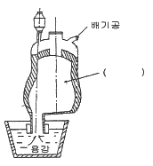
- 레이들
- 취상관
- 진공조
- 합금 첨가장치
(정답률: 81%)
43. 제강조업에서 소량의 첨가로 염기도의 저하 없이 슬래그의 용융온도를 낮추어 유동성을 좋게 하는 것은?
- 생석회
- 석회석
- 형석
- 철광석
(정답률: 81%)
44. 재해율 중 강도율을 구하는 식으로 옳은 것은?
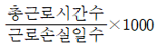
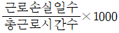
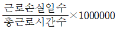
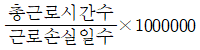
(정답률: 79%)
45. 상주법으로 강괴를 제조하는 경우에 대한 설명으로 틀린 것은?
- 내화물에 의한 개재물이 적다.
- 주형 정비작업이 간단하다.
- 강괴표면이 우수하다.
- 대량생산에 적합하다.
(정답률: 76%)
46. 완전 탈산한 강으로 주형 상부에 압탕 틀(hot top)을 설치하여 이곳에 파이프를 집중 생성시켜 분괴 압엽한 후 이 부분을 잘라내는 강괴는?
- 림드강
- 캡드강
- 킬드강
- 세미킬드강
(정답률: 87%)
47. 롤러 에이프런의 설명으로 옳은 것은?
- 수축공의 제거
- 턴디시의 교환역할
- 주조 중 폭의 증가 촉진
- 주괴가 부푸는 것을 막음
(정답률: 75%)
48. 단조나 열간 가공한 재료의 파단면에 은회색의 반점이 원형으로 집중되어 나타나는 결함은 주로 강의 어떤 성분 때문인가?
- 수소
- 질소
- 산소
- 이산화탄소
(정답률: 74%)
49. 몰드 플럭스(Mold Flux)의 주요 기능을 설명한 것 중 틀린 것은?
- 주형 내 용강의 보온 작용
- 주형과 주편 간의 윤활 작용
- 부상한 개재물의 용해 흡수 작용
- 주형 내 용강 표면의 산화 촉진 작용
(정답률: 81%)
50. 전기 아크로의 조업 순서로 옳게 나열한 것은?
- 원료 장입 → 용해 → 산화 → 슬래그 제거 → 환원 → 출강
- 원료 장입 → 용해 → 환원 → 슬래그 제거 → 산화 → 출강
- 원료 장입 → 산화 → 용해 → 환원 → 슬래그 제거 → 출강
- 원료 장입 → 환원 → 용해 → 산화 → 슬래그 제거 → 출강
(정답률: 66%)
51. 연속주조에서 조업 조건의 내용을 설비 요인과 조업 요인으로 나눌 때 조업요인에 해당되지 않는 것은?
- 주조 온도
- 윤활제 재질
- 진동수와 진폭
- 주편 크기 및 형상
(정답률: 60%)
52. LF(ladle furnace) 조업에서 LF 기능과 거리가 먼 것은?
- 용해기능
- 교반기능
- 정련기능
- 가열기능
(정답률: 59%)
53. 주형의 밑을 막아주고 핀치롤까지 주편을 인발하는 것은?
- 몰드
- 레이들
- 더미바
- 침지노즐
(정답률: 82%)
54. 전로 제강법의 특징을 설명한 것 중 틀린 것은?
- 성분을 조절하기 위한 부원료 등의 조절이 필요하다.
- 장입 주원료인 고철을 무제한으로 사용이 가능하다.
- 강의 최종성분을 조절하기 위하여 용강에 첨가하는 합금철, 탈산제가 있다.
- 용선 중의 C, Si, Mn 등은 취련 중에 산소와 화학 반응에 의해 열을 발생한다.
(정답률: 86%)
55. 슬래그(slag)의 역할이 아닌 것은?
- 정련 작용
- 용강의 산화방지
- 가스의 흡수방지
- 열의 방출 작용
(정답률: 70%)
56. 저취 전로조업에 대한 설명으로 틀린 것은?
- 극저탄소(C=0.04%)까지 탈탄이 가능하다.
- 교반이 강하고, 강욕의 온도, 성분이 균질하다.
- 철의 산화손실이 적고, 강중에 산소가 낮다.
- 간접반응을 하기 때문에 탈인 및 탈황이 효과적이지 못하다.
(정답률: 77%)
57. 비금속 개재물에 대한 설명 중 옳은 것은?
- 용강보다 비중이 크다.
- 제품의 강도에는 영향이 없다.
- 압연 중 균열의 원인은 되지 않는다.
- 용강의 공기 산화에 의해 발생한다.
(정답률: 64%)
58. 출강작업의 관찰시 필이 착용해야 할 안전장비는?
- 방열복, 방호면
- 운동모, 귀마개
- 방한복, 안전벨트
- 면장갑, 운동화
(정답률: 90%)
59. 보기의 반응은 어떤 반응식인가?
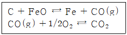
- 탈인 반응
- 탈황 반응
- 탈탄 반응
- 탈규소 반응
(정답률: 87%)
60. 턴디시 노즐 막힘 사고를 방지하기 위하여 사용되는 것이 아닌 것은?
- 포러스 노즐
- 경동 장치
- 가스 취입 스토퍼
- 가스 슬리브 노즐
(정답률: 90%)